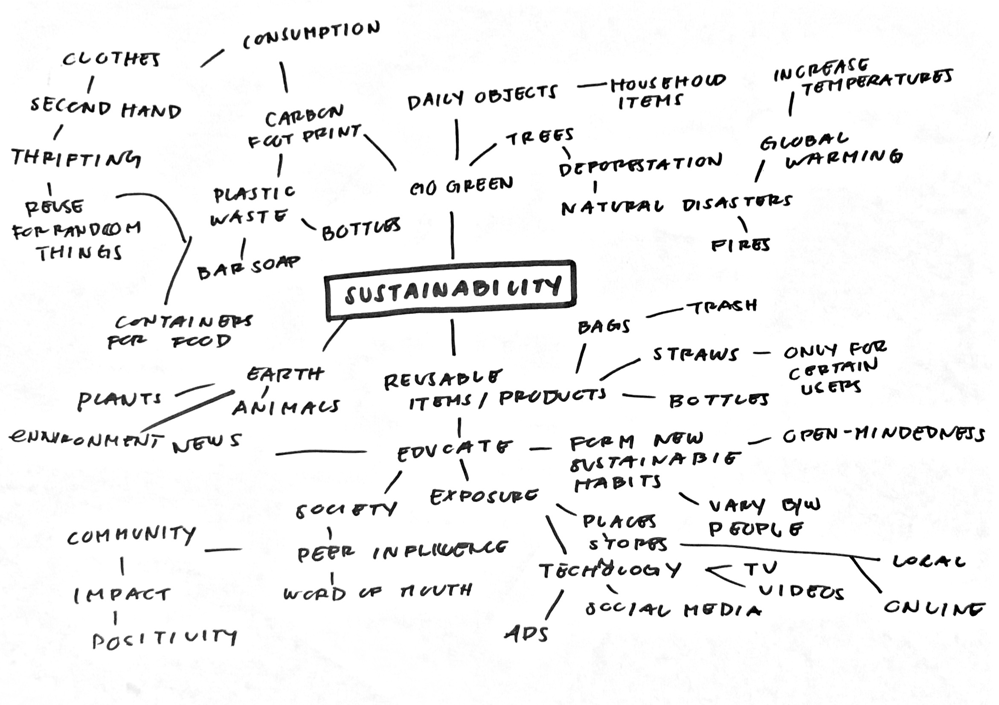

Mind Map Summary
Brainstorming helped me generate various ideas related to the topic of interest. At some points, jotting one topic would lead me to the next and so forth. As of now, a topic that interests me after completing this mind map is empowerment and social connection, most specifically within marginalized groups. So far, I am still unsure on the specifity of my interactive project.